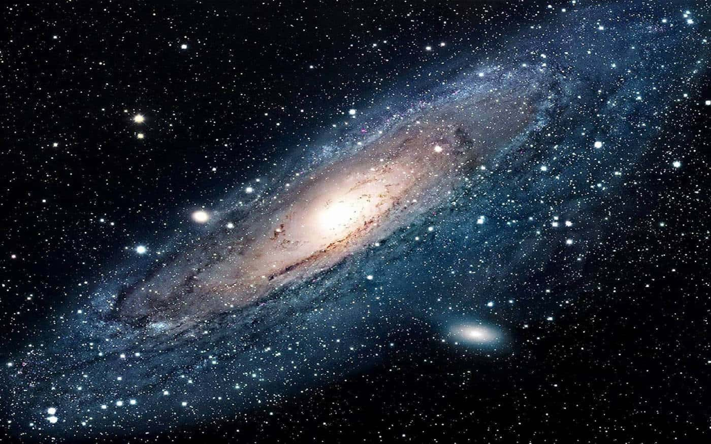
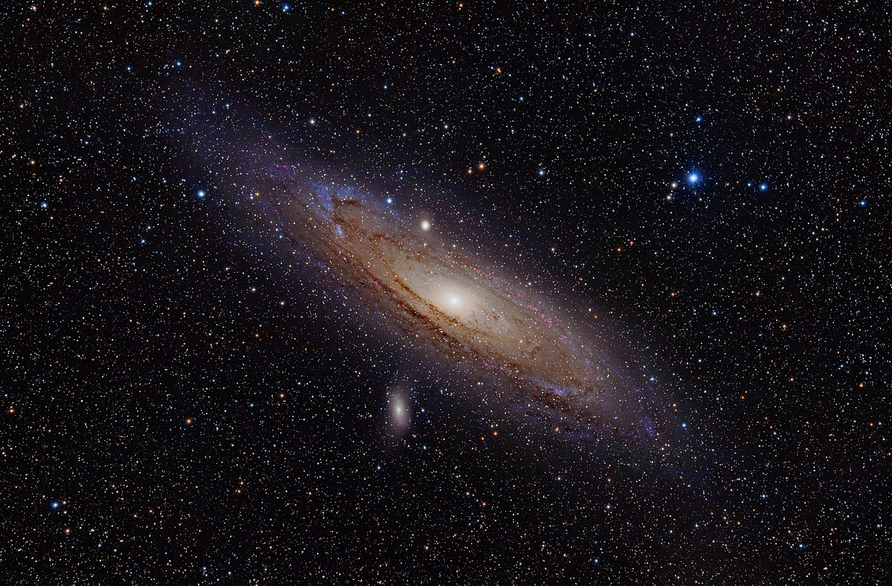

Галактика — це гравітаційно звязана система із зірок, зоряних скупчень, газу та пилу, планет та темної матерії.
Слово галактика походить від грецької назви нашої галактики κύκλος γαλαξίας означає «молочне кільце» — як опис явища, яке ми бачимо на нічному небі.
Всі об'єкти в галактиці рухаються навколо відносно спільного центра мас.

Всі галактики (крім нашої) дуже віддалені об'єкти. Відстань до найближчих галактик вимірюють в мегапарсеках, а до далеких в одиницях червоного вимірювання.
Саме через віддаленість, неозброєним оком на небі можна побачити тільки декілька з них: галактика Андромеди, Велику і Малу Магелланові Хмари.
Тепер давайте поговоримо про найближчу галактику — Андромеду.

Андромеда — найближча до Чумацького Шляху велика галактика, розташована в сузір'ї Андромеди і віддалена від нас на відстань 772 кілопарсек (2,52 мільйонів світлових років).
Перша письмова згадка про галактику Андромеди міститься в «Каталозі нерухомих зір» перського астронома Ас-Суфі, який описав її як «маленьку хмару».
Молочний Шлях, або Чумацький шлях — це галактика, у якій розташована наша Сонячна система, а також усі зорі, які ми бачимо неозброєним оком.
Чумацький Шлях є спіральною галактикою типу SBbc за класифікацією Хаббла, що разом із галактикою Андромеди, Галактикою Трикутника та іншими галактиками утворюють місцеву галактичну групу. А місцева група входить до Надскупчення Діви.
Чому Чумацький шлях?
Згідно з легендою чумаки їздили до Криму по сіль, орієнтуючись вночі на світлу смугу на небі. Ніби перші чумаки, їдучи з Криму, позначили дорогу сіллю, яка сипалася з дір в мажарах. Господь переніс соляну дорогу на небеса. З того часу чумаки знали шлях по сіль і додому. Ще вважали, що Чумацький Шлях — небесна дорога для людських праведних душ, що летять по цій дорозі в рай, а грішні — до пекла. Птахи по ньому восени відлітають у вирій, а весною повертаються.
Також існує давня українська назва Чумацького шляху — Божа дорога.
Цією дорогою нібито у золотій колісниці їздить пророк Ілля (християнський наступник праукраїнського й праслов'янського Перуна) і гримить, метаючи золоті стріли блискавиць у демонів Арідника, Тринрода, Триюду, Чортів, Бісів, Чугайстрів та інших.